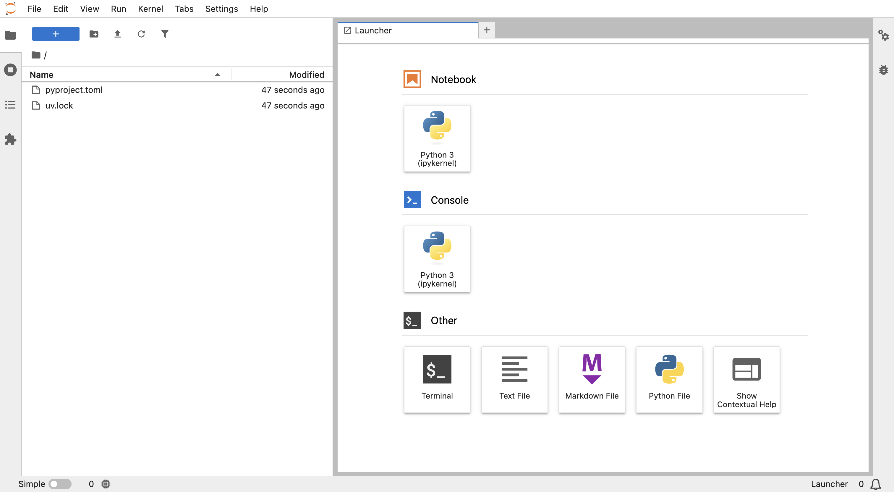
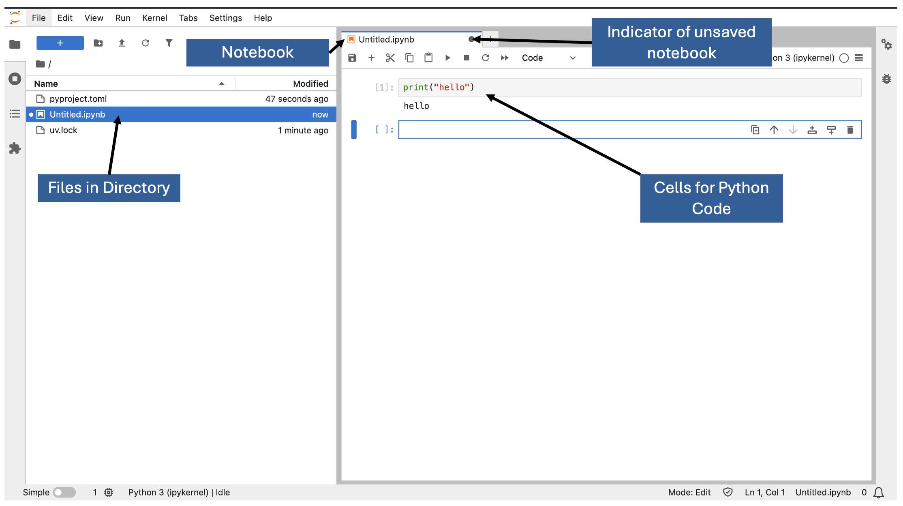

Python Environment Setup
In the previous section, we showed you how to open a terminal, create a folder, and move “into” the folder. You will need to do this for every data science project.
Now that you are in this folder, you will want to install all the tools you need for your code to run, and to do your research. Virtual environments, which we create here, are a great way to keep all the tools you need organized alongside your code and separate from other projects.
A package manager is a tool that helps you install, update, and manage software libraries (called “packages”) for a programming language. Packages essentially contain chunks of code that you might find useful, that you don’t want to write yourself!
For most python projects, uv will be a great choice of package manager. For notes on when you may want to use other package managers, see here
Install Package Manager
Package manager installation should only need to be done once on your computer.
Instructions are included below. If you encounter any issues, see here for more installation methods to try. Or contact the JGI team.
Install UV
Open your terminal and run:
winget install astral-uv.uvOpen Terminal and run:
curl -Ls https://astral.sh/uv/install.sh | bashOpen Terminal and run:
curl -Ls https://astral.sh/uv/install.sh | bashAfter installation, check that uv is available by typing uv --version, then pressing enter. You may need to restart your terminal for the changes to take effect.
Move into Project Directory
To set up your Python environment, you need to be in your project directory. Follow these steps:
- Open your terminal.
- Create or navigate to your project directory.
If it is not clear how to do so, please refer to the previous section.
To check you are in the correct directory, enter the following command:
cdpwdpwdCreate a Virtual Environment
Enter the following command to create a minimal virtual environment:
uv init --bareThis will create a pyproject.toml file, which will record information on all of the packages you install in your virtual environment.
Install Packages
For all projects we need jupyterlab, this is where we edit code. This can be added to your project with this command:
uv add jupyterlabFor the “Introduction to Data Analysis in Python” course (see here), you would need the pandas and seaborn package. You can add these with:
uv add pandas seabornGenerally speaking, to add a package to your environment, you can use the following command:
uv add <package-name>Replace <package-name> with the name of the package you want to install.
Opening JupyterLab
Now you can open JupyterLab with:
uv run jupyter labThis will take some time, and you will see text being printed in the terminal. Once JupyterLab is running, a browser window should pop open. This window should like similar to the image below.

Create a Notebook
To create a notebook, click the “Notebook” icon in the JupyterLab launcher. The window should now look like this:

In each cell, python code can be entered. It can be run by clicking the “Run” button or by pressing Shift + Enter.
Summary
Well done, you have created an interactive JupyterLab environment for your Python project! You should now be able to follow along with our Python courses.
The steps in this page are crucial for setting up your Python environment effectively, and we recommend you follow these for your own projects, as well as for our courses.